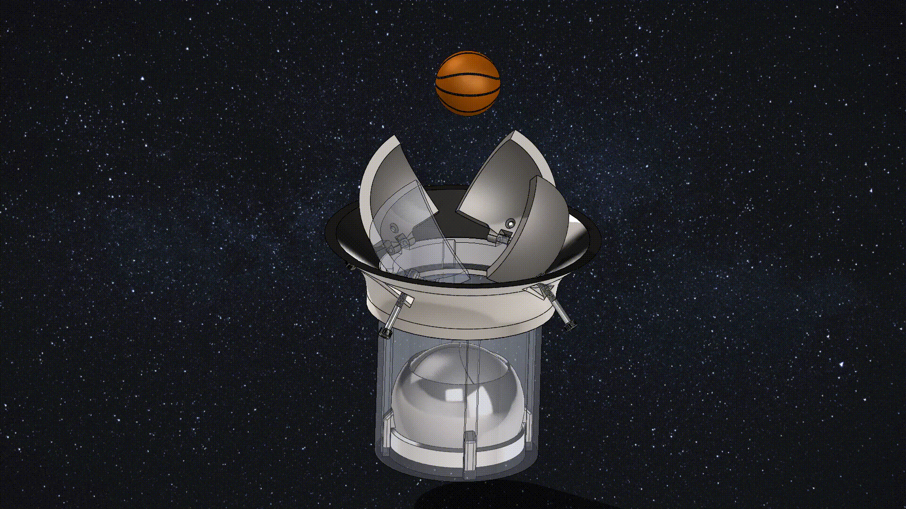

Space Junk Collector
meet my walking bipedal robot
For my senior design project at Columbia, my group of five mechanical engineers is partnering with NASA, JPL to design a mechanism that addresses the problem of space junk.
Space junk is an ever growing problem and each additional object sent into low earth orbit perpetuates Kessler syndrome and will eventually render our egress from earth impossible.
We are working on a subsystem mechanism to capture debris between 10 and 30 cm. This would fit into a larger mission architecture (with many components beyond the scope of our project).

A CAD rendering of our latest prtotype.
This airlock like mechanisum is designed to capture a pise of debris and add it to the "holding cell" loosing any of the already captured junk.

txt

txt
Period.

txt

txt